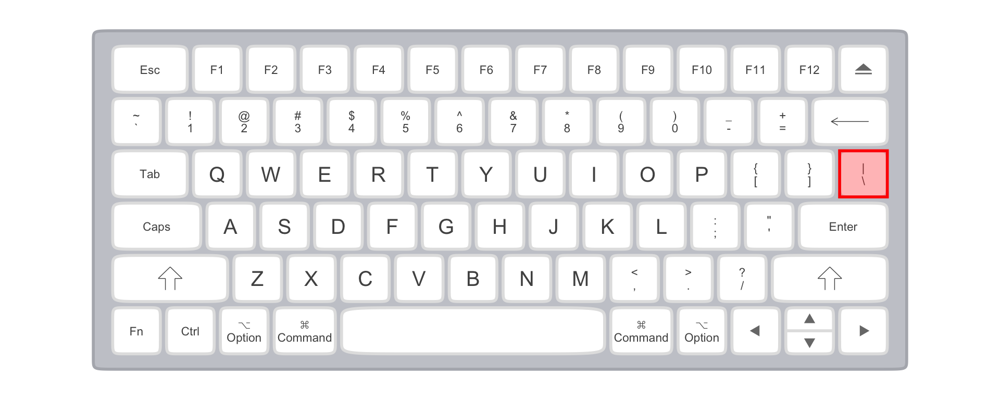

In command line interfaces, there are some characters you’ll want to enter frequently which don’t otherwise show up very often when you’re typing. This guide is meant to help you find those keys.
Individual Keys
` back tick
This is importantly not the same as your familiar apostrophe key.
backtick on the tenkeyless keyboard
backtick on the mac keyboard
\ backslash
This symbol is used to separate directory names in DOS, but is more usually used as an “escape” character. It is importantly different from the forward slash symbol, /.
backslash on the tenkeyless keyboard

backslash on the mac keyboard
/ slash, or forward slash
While we’re on the subject, here’s forward slash, used to separate directories on Unix-like systems (including macOS).
slash on the tenkeyless keyboard
slash on the mac keyboard
[ and ] square brackets
These have a number of different uses in programming languages. Usually when you have an “open” bracket [ you need to make sure that you “close” it ].
square brackets on the tenkeyless keyboard
tilde on the mac keyboard
Modified Keys
You get the following symbols by holding Shift + another key.
~ tilde
This symbol is used as a shortcut for your home directory in unix-like systems, and for many other purposes
tilde on the tenkeyless keyboard
tilde on the mac keyboard
^ caret
This symbol is sometimes used to indicate the Control key on a Mac keyboard, but usually it’s the caret.
caret on the tenkeyless keyboard
caret on the mac keyboard
_ underscore
Underscores are often used in file and variable names.
underscore on the tenkeyless keyboard
underscore on the mac keyboard
{ and } curly brackets
A lot like the square brackets, these serve a number of different uses. And again, when you have an open backet { you’ll want to make sure you close it }.
curly brackets on the tenkeyless keyboard
curly brackets on the mac keyboard
| pipe or bar
This vertical line often means “or” in programming languages.
bar location on the tenkeyless keyboard
bar brackets on the mac keyboard
< and > less than & greater than or angle brackets
Sometimes the symbols < and > are used for their mathematical meaning of “less than” and “greater than.” Other times they’re used as brackets, a lot like the square or curly brackets.
angle bracket location on the tenkeyless keyboard
angle bracket location on the tenkeyless keyboard
Modifier Combos
Sometimes you’ll see key combinations suggested to help you use the command line and other programming languages. For example, the key combo “Control+C” or “Ctrl+C” will end whatever process is running in a Unix-like system. What this notation means is that you should press the Control key, and while continuing to hold it, press the C key.
Ctrl+C location on the tenkeyless keyboard
Ctrl+C location on the tenkeyless keyboard
If you ever see more than two keys included in a key combination, assume they need to be pressed and held in the order they appear.
Reuse
CC-BY-SA 4.0
Citation
BibTeX citation:
@online{fruehwald2022,
author = {Fruehwald, Josef},
title = {Keyboarding},
series = {Linguistics Methods Hub},
date = {2022-09-01},
url = {https://lingmethodshub.github.io/content/cli/keyboarding},
doi = {10.5281/zenodo.7044879},
langid = {en}
}
---title: "Keyboarding"author: - name: "Josef Fruehwald" url: "https://jofrhwld.github.io/" affiliations: - University of Kentuckydate: 2022-9-1doi: 10.5281/zenodo.7044879license: "CC-BY-SA 4.0"editor: visualknitr: opts_chunk: echo: false message: false---```{r}#| include: falserenv::use(lockfile ="renv.lock")```In command line interfaces, there are some characters you'll want to enter frequently which don't otherwise show up very often when you're typing. This guide is meant to help you find those keys.```{r}library(ggkeyboard)library(tidyverse)```## Individual Keys### <code>\`</code> back tickThis is importantly not the same as your familiar apostrophe key.```{r}#| fig.cap: "backtick on the tenkeyless keyboard"#| cap-location: margin#| column: screen-inset-shaded#| out-width: 150%#| fig-width: 10#| fig-height: 4ggkeyboard(palette =keyboard_palette("wahtsy")) %>%highlight_keys(c("~`"),fill ="red", colour ="red",alpha =0.3)``````{r}#| fig.cap: "backtick on the mac keyboard"#| cap-location: margin#| column: screen-inset-shaded#| out-width: 150%#| fig-width: 10#| fig-height: 4ggkeyboard(keyboard = mac,palette =keyboard_palette("magic")) %>%highlight_keys(c("~`"),fill ="red", colour ="red",alpha =0.3)```### `\` backslashThis symbol is used to separate directory names in DOS, but is more usually used as an "escape" character. It is **importantly** different from the forward slash symbol, `/`.```{r}#| fig.cap: "backslash on the tenkeyless keyboard"#| cap-location: margin#| column: screen-inset-shaded#| out-width: 150%#| fig-width: 10#| fig-height: 4ggkeyboard(palette =keyboard_palette("wahtsy")) %>%highlight_keys(c("|\\"),fill ="red", colour ="red",alpha =0.3)``````{r}#| fig.cap: "backslash on the mac keyboard"#| cap-location: margin#| column: screen-inset-shaded#| out-width: 150%#| fig-width: 10#| fig-height: 4ggkeyboard(mac,palette =keyboard_palette("magic")) %>%highlight_keys(c("|\\"),fill ="red", colour ="red",alpha =0.3)```### `/` slash, or forward slashWhile we're on the subject, here's forward slash, used to separate directories on Unix-like systems (including macOS).```{r}#| fig.cap: "slash on the tenkeyless keyboard"#| cap-location: margin#| column: screen-inset-shaded#| out-width: 150%#| fig-width: 10#| fig-height: 4ggkeyboard(palette =keyboard_palette("wahtsy")) %>%highlight_keys(c("?/"),fill ="red", colour ="red",alpha =0.3)``````{r}#| fig.cap: "slash on the mac keyboard"#| cap-location: margin#| column: screen-inset-shaded#| out-width: 150%#| fig-width: 10#| fig-height: 4ggkeyboard(mac,palette =keyboard_palette("magic")) %>%highlight_keys(c("?/"),fill ="red", colour ="red",alpha =0.3)```### `[` and `]` square bracketsThese have a number of different uses in programming languages. Usually when you have an "open" bracket `[` you need to make sure that you "close" it `]`.```{r}#| fig.cap: "square brackets on the tenkeyless keyboard"#| cap-location: margin#| column: screen-inset-shaded#| out-width: 150%#| fig-width: 10#| fig-height: 4ggkeyboard(keyboard =tkl,palette =keyboard_palette("wahtsy")) %>%highlight_keys(c("{[", "}]"),fill ="red", colour ="red",alpha =0.3)``````{r}#| fig.cap: "tilde on the mac keyboard"#| cap-location: margin#| column: screen-inset-shaded#| out-width: 150%#| fig-width: 10#| fig-height: 4ggkeyboard(keyboard = mac,palette =keyboard_palette("magic")) %>%highlight_keys(c("{[", "}]"),fill ="red", colour ="red",alpha =0.3)```## Modified KeysYou get the following symbols by holding Shift + another key.### `~` tildeThis symbol is used as a shortcut for your home directory in unix-like systems, and for many other purposes```{r}#| fig.cap: "tilde on the tenkeyless keyboard"#| cap-location: margin#| column: screen-inset-shaded#| out-width: 150%#| fig-width: 10#| fig-height: 4ggkeyboard(keyboard =tkl,palette =keyboard_palette("wahtsy")) %>%highlight_keys(c("Shift Left", "~`"),fill ="red", colour ="red",alpha =0.3)``````{r}#| fig.cap: "tilde on the mac keyboard"#| cap-location: margin#| column: screen-inset-shaded#| out-width: 150%#| fig-width: 10#| fig-height: 4ggkeyboard(keyboard = mac,palette =keyboard_palette("magic")) %>%highlight_keys(c("Shift Left", "~`"),fill ="red", colour ="red",alpha =0.3)```### `^` caretThis symbol is *sometimes* used to indicate the Control key on a Mac keyboard, but usually it's the caret.```{r}#| fig.cap: "caret on the tenkeyless keyboard"#| cap-location: margin#| column: screen-inset-shaded#| out-width: 150%#| fig-width: 10#| fig-height: 4ggkeyboard(keyboard =tkl,palette =keyboard_palette("wahtsy")) %>%highlight_keys(c("Shift Left", "6"),fill ="red", colour ="red",alpha =0.3)``````{r}#| fig.cap: "caret on the mac keyboard"#| cap-location: margin#| column: screen-inset-shaded#| out-width: 150%#| fig-width: 10#| fig-height: 4ggkeyboard(keyboard = mac,palette =keyboard_palette("magic")) %>%highlight_keys(c("Shift Left", "6"),fill ="red", colour ="red",alpha =0.3)```### `_` underscoreUnderscores are often used in file and variable names.```{r}#| fig.cap: "underscore on the tenkeyless keyboard"#| cap-location: margin#| column: screen-inset-shaded#| out-width: 150%#| fig-width: 10#| fig-height: 4ggkeyboard(keyboard =tkl,palette =keyboard_palette("wahtsy")) %>%highlight_keys(c("Shift Left", "_-"),fill ="red", colour ="red",alpha =0.3)``````{r}#| fig.cap: "underscore on the mac keyboard"#| cap-location: margin#| column: screen-inset-shaded#| out-width: 150%#| fig-width: 10#| fig-height: 4ggkeyboard(keyboard = mac,palette =keyboard_palette("magic")) %>%highlight_keys(c("Shift Left", "_-"),fill ="red", colour ="red",alpha =0.3)```### `{` and `}` curly bracketsA lot like the square brackets, these serve a number of different uses. And again, when you have an open backet `{` you'll want to make sure you close it `}`.```{r}#| fig.cap: "curly brackets on the tenkeyless keyboard"#| cap-location: margin#| column: screen-inset-shaded#| out-width: 150%#| fig-width: 10#| fig-height: 4ggkeyboard(keyboard =tkl,palette =keyboard_palette("wahtsy")) %>%highlight_keys(c("Shift Left","{[", "}]"),fill ="red", colour ="red",alpha =0.3)``````{r}#| fig.cap: "curly brackets on the mac keyboard"#| cap-location: margin#| column: screen-inset-shaded#| out-width: 150%#| fig-width: 10#| fig-height: 4ggkeyboard(keyboard = mac,palette =keyboard_palette("magic")) %>%highlight_keys(c("Shift Left", "{[", "}]"),fill ="red", colour ="red",alpha =0.3)```### `|` pipe *or* barThis vertical line often means "or" in programming languages.```{r}#| fig.cap: "bar location on the tenkeyless keyboard"#| cap-location: margin#| column: screen-inset-shaded#| out-width: 150%#| fig-width: 10#| fig-height: 4ggkeyboard(keyboard =tkl,palette =keyboard_palette("wahtsy")) %>%highlight_keys(c("Shift Left", "|\\"),fill ="red", colour ="red",alpha =0.3)``````{r}#| fig.cap: "bar brackets on the mac keyboard"#| cap-location: margin#| column: screen-inset-shaded#| out-width: 150%#| fig-width: 10#| fig-height: 4ggkeyboard(keyboard = mac,palette =keyboard_palette("magic")) %>%highlight_keys(c("Shift Left", "|\\"),fill ="red", colour ="red",alpha =0.3)```### `<` and `>` less than & greater than *or* angle bracketsSometimes the symbols `<` and `>` are used for their mathematical meaning of "less than" and "greater than." Other times they're used as brackets, a lot like the square or curly brackets.```{r}#| fig.cap: "angle bracket location on the tenkeyless keyboard"#| cap-location: margin#| column: screen-inset-shaded#| out-width: 150%#| fig-width: 10#| fig-height: 4ggkeyboard(keyboard =tkl,palette =keyboard_palette("wahtsy")) %>%highlight_keys(c("Shift Left", "<,", ">."),fill ="red", colour ="red",alpha =0.3)``````{r}#| fig.cap: "angle bracket location on the tenkeyless keyboard"#| cap-location: margin#| column: screen-inset-shaded#| out-width: 150%#| fig-width: 10#| fig-height: 4ggkeyboard(keyboard = mac,palette =keyboard_palette("magic")) %>%highlight_keys(c("Shift Left", "<,", ">."),fill ="red", colour ="red",alpha =0.3)```## Modifier CombosSometimes you'll see key combinations suggested to help you use the command line and other programming languages. For example, the key combo "Control+C" or "Ctrl+C" will end whatever process is running in a Unix-like system. What this notation means is that you should press the `Control` key, and while continuing to hold it, press the `C` key.```{r}#| fig.cap: "Ctrl+C location on the tenkeyless keyboard"#| cap-location: margin#| column: screen-inset-shaded#| out-width: 150%#| fig-width: 10#| fig-height: 4ggkeyboard(keyboard =tkl,palette =keyboard_palette("wahtsy")) %>%highlight_keys(c("Ctrl Left", "C"),fill ="red", colour ="red",alpha =0.3)``````{r}#| fig.cap: "Ctrl+C location on the tenkeyless keyboard"#| cap-location: margin#| column: screen-inset-shaded#| out-width: 150%#| fig-width: 10#| fig-height: 4ggkeyboard(keyboard = mac,palette =keyboard_palette("magic")) %>%highlight_keys(c("Ctrl", "C"),fill ="red", colour ="red",alpha =0.3)```If you ever see more than two keys included in a key combination, assume they need to be pressed and held in the order they appear.